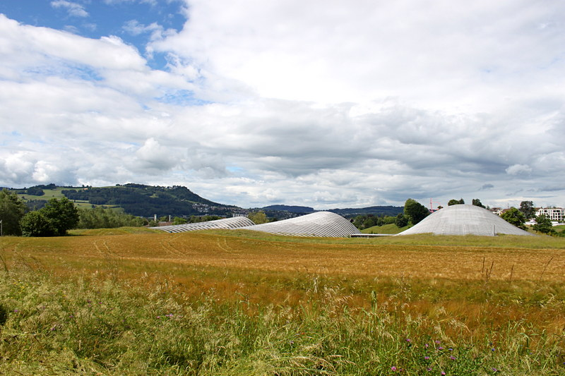

Wenn im Spätsommer das Getreide reif zur Ernte ist, verschwinden die drei Erhebungen des von Renzo Piano entworfenen Zentrums Paul Klee fast im wogenden Ährenfeld. Das «Monument im Fruchtland 3» schmiegt sich in die Landschaft ein, als sei es kein von Menschen gemachtes Kunstobjekt, sondern gehöre naturwüchsig zu seiner Umgebung. Wie Klee einen engen Konnex zwischen Schöpfungs- und Kunsttätigkeit gesehen hat, so gehören auch im «Fruchtland» Kunst, Natur und Agrikultur nachhaltig zusammen. Wer das ZPK besucht, sollte darum nicht nur auf den beiden Ebenen des dreiwelligen Gebäudes, sondern auch in seiner Umgebung verweilen.
Das von Renzo Piano entworfene «Monument im Fruchtland 3». (Bild: Gergely Csukás)
Wer zu nahe kommt, geht zu weit
«Komm nicht näher [...], denn der Ort, wo du stehst, ist heiliger Boden.» Mit diesen Worten wird Mose, als er sich dem Phänomen des brennenden, aber nicht verbrennenden Dornbusches nähert, von Gott auf Distanz gehalten. «Gehen Sie bitte nicht so nah an die Bilder heran!» mahnt mich bei fast jedem meiner Besuche im ZPK eine der Aufsichtspersonen, wenn ich wieder einmal einem der Exponate allzu nahe gekommen bin, um Pinselstriche, Linienführung oder Farbgebung genauer zu sehen. Ob ich dieser Mahnung eher Folge leisten würde, käme sie mir vom aus nächster Nähe betrachteten Bild selbst entgegen?! Doch auch wenn ich Klees Bilder aus gehöriger Entfernung studiere, ziehen sie mich an, verwickeln mich ins Gespräch und imponieren sich meinen theologischen Texten. Aus dem Betrachten wird eine «companionship» mit ihnen, wie Mark Rothko sie sich – anstelle einer Interpretation – für seine Bilder gewünscht hat. So ist mir etwa Klees «Engel, noch tastend» (1939) zur hermeneutischen Schlüsselfigur meiner eschatologischen Tastversuche als Dogmatikerin geworden.
Das ZPK – ein theologisch relevanter Ort?
Mit rund 4000 Exponaten beherbergt das ZPK die weltweit bedeutendste Sammlung von Klee-Werken und gibt so auch jener Themenvielfalt des Künstlers eine Schweizer Heimat, die sich seit 1912 in internationalen Ausstellungen dokumentierte. Inwiefern kann dieser Ort auch von theologischem Interesse sein? Gewiss nicht in dem Sinne, dass hier, wie Paul Klee lange – auch aufgrund von Selbststilisierungen – verklärt und überhöht worden ist, ein Gott residiert und sein Universum präsentiert. Spätestens mit dem 100. Geburtstag des Künstlers ist diese unkritische kultische Verehrung Klees einer wissenschaftlichen Aufarbeitung von Leben und Werk gewichen, der sich auch die Stiftung Zentrum Paul Klee verschrieben hat. Dadurch wird erstmals eine sachgemässe kunsthistorische Erforschung des seit Beginn der 1920er Jahre in der Kunstwelt hochgeachteten Werks des Lehrers am Bauhaus in Weimar und Dessau möglich. So ist das ZPK ebenso sehr ein Archivierungs- und Dokumentationsort wie eine Forschungs- und Lernstätte – eine sehr kinderfreundliche noch dazu und einladend für Menschen mit Handicap. Ein theologisch relevanter Ort ist das ZPK nicht nur deshalb, weil sich in manche Bilder Klees unübersehbar religiöse und biblische Motive eingezeichnet haben. Vielmehr noch lädt der Blickwechsel mit Werken Klees dazu ein, das Leben – wie der «Angelus novus» (1920) – in seiner radikalen Gefährdung und zugleich – wie etwa die lichten Landschaftsaquarelle – in seiner prallen, farbenfrohen Schönheit wahrzunehmen und nicht schon einen kleinen Ausschnitt für das Ganze zu halten. Sich mitnehmen und weiterführen lassen – über die eigenen Erfahrungen und das, was der Fall ist, hinaus ...
Zeuge der Verwundbarkeit und der Schönheit des Lebens
«Diesseitig bin ich gar nicht fassbar, denn ich wohne gerade so gut bei den Toten wie bei den Ungeborenen, etwas näher dem Herzen der Schöpfung, aber noch lange nicht nahe genug», hat Paul Klee von sich gesagt und war doch zugleich ein hellwacher Zeitgenosse, der geradezu seismografisch-prophetisch die Zeichen der Zeit gedeutet und die politischen Ereignisse wie sein davon in Mitleidenschaft gezogenes Leben in seiner Kunst bearbeitet hat. Eindrückliche Beispiele dafür sind die Bilder «Die Zeit» (1933) – eine Zeitansage angesichts der nationalsozialistischen Machtübernahme, «von der Liste gestrichen» (1933), womit Klee die Verfemung seiner Werke als «entartete Kunst» aufgreift, oder «Das Tor zur Tiefe» (1936) mit jener schwarzen Mitte der geahnten Todesnähe. Selbst die Engelbilder, die zu den bekanntesten und theologisch am häufigsten rezipierten Motiven Klees gehören, zeigen weniger die traditionellen Boten zwischen Himmel und Erde als vielmehr menschliche, oft auch kindliche, in Wandlungen begriffene Begleiterinnen des Lebens, die in ihrer eigenen Verletzlichkeit und Ambivalenz für Klee besonders in den letzten Lebensjahren zu Weggefährten wurden: «Bei den Engeln ist alles wie bei uns, nur englisch.» Und noch die Machart seiner lichtempfindlichen Bilder hat Anteil an dieser Fragilität. Darum sind nicht nur aus Platzgründen jeweils 120 bis 150 von ihnen in halbjährlichen thematischen Ausstellungen zu sehen, während die übrigen unseren Blicken verborgen bleiben und nur so ihre Schönheit bewahren: Offenbarung und Entzug zugleich. Ein antitotalitäres Ausstellungskonzept. So gibt es bei jedem Besuch im ZPK Fremdes zu entdecken, und ich lese je aufs Neue Klees Bilder als (s)eine Liebeserklärung an das bedrohte Leben der Menschen, der Flora und Fauna, das gerade in seiner Verletzlichkeit über sich hinausweist. Es ist ebendiese transzendierende Fragilität, die das ZPK zu einem nicht nur kunsthistorisch, sondern auch theologisch bedeutsamen Ort macht.
Dr. Magdalene L. Frettlöh ist Professorin für Systematische Theologie (Dogmatik & Religionsphilosophie) an der Universität Bern.
Weitere Artikel von {{author.author}} finden Sie hier: